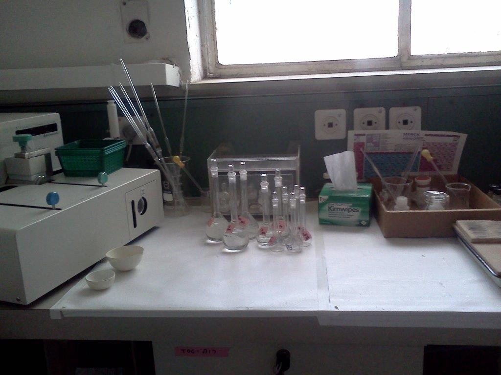

My work as aChemist
Analytical Chemistry

Analytical Chemistry
I graduated in Chemistry from London University, Chelsea College in 1973, and immediately started work at Fescol, a company that carried out electrochemical plating, mainly of internal parts of airplane engines. There the labs were concerned with quality control of the processes and some research into new analytical methods for monitoring these processes. January 1974 I came to Israel and improved my Hebrew at Ulpan Etzion in Jerusalem.
After Ulpan I started at the Geological Survey of Israel, "the Machon" which was then in the Geula neighbourhood in Jerusalem. I worked there for over fourty-four years, leaving six months before the Machon moved to alongside the Hebrew University Givat Ram campus.
The Machon is a Government Research facility, belonging to several different Ministeries over the years, now under the Ministry of Energy. As the focus on different government interests change, so do the work projects, as well as those connected to the geologists personal areas of research. Therefore I was involved in several projects that needed the resources of the Labs in the Geochemistry and Environmental Geology division.
The analytical methods entailed tested and true standard analytical chemistry wet lab methods to new processes and modern machinery developed over the years.
I was extremely fortunate in being able to work in an area that was so interesting, using my skills I had been trained in and learning new ones along the way.